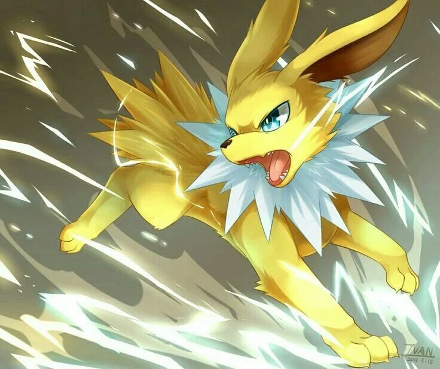
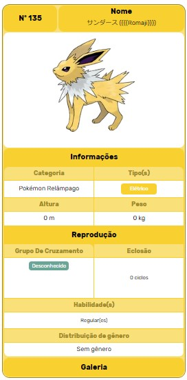

Joelton o Eletrico
Jolteon (em Japonês: サンダース Thunders) é um Pokémon tipo Elétrico. Ele é uma das evoluções do Eevee.
é um Pokémon canino que está coberto de pêlo amarelo com uma franja espetada em torno de sua cauda, e um colar branco em torno de seu pescoço. Suas orelhas são grandes e pontudas, e seus olhos e nariz pequeno são negros. Ele tem pernas finas e pequenas patas, cada uma com três dedos e um bloco de pata-de-rosa.
Diferenças de Genero
Não ha diferenças de genero no Joelton
Habilidades Especiais
Além da capacidade de se tornar afiado como agulha, a pele de também amplifica as cargas eléctricas produzidas pelas suas células. Ele também pode armazenar e gerar íons negativos na sua pele, o que cria um ruído de faíscas.
No Anime
apareceu pela primeira vez em Irmãos da Pesada!, junto aos Irmãos Eevee. Ash lutou contra um na Liga Pokémon em O Teste Final. Em Vai Nessa, Pokémon!, Ethan usou um como um cão pastor. Sempre que qualquer um Magnemite de Ethan tentou escapar, usaria para atraí-los de volta. também foi visto com uma das Irmãs Kimono em Chá de Encrencas. Volkner usou um em A Oitava Maravilha do Mundo Sinnoh! durante sua batalha de ginásio com Ash. Ele foi derrotado pelo Infernape do Ash.
